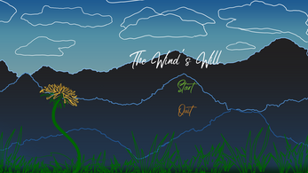

The Wind's Will
The Wind’s Will is a hardcore arcade game developed by me, Nando Berg, Elizabeth Seemann and Jessica Hermann for the Global Game Jam 2023. The theme for this Jam was “Roots”, therefore we conceptualized the idea that the user should accompany a dandelion seed on its way to sprout new roots.
- Genre: Highscore Arcade
- Engine: Unity Game Engine
- Role(s): Gameplay Programmer
- Team Size: 4
- Development Time: 48h
My Contributions
Programming
Implementation of multiple enemy behaviours like: the Bird, the Frog and Falling Seeds
Implementation of a simple Parralax Effect to simulate movement.